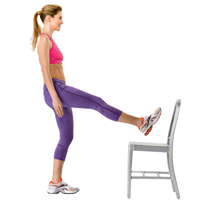

Leg Exercises

While you stand facing a chair, raise your right leg, knee facing up, foot flexed and place your heel on the seat.
Make sure not to lock your standing knee as you lift your right foot off the chair and straighten it out until you feel your quadriceps engage.
Keeping your lifted leg in the air, bend the leg on the floor slightly and then straighten it again.
Do 10-15 reps, then switch sides and repeat for 1 full set; do 3 sets.